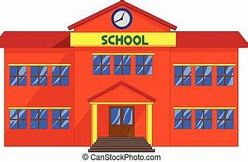

Warto odwiedzić:


Uwaga! W związku z dostosowaniem do nowoczesnych standardów sal AU, G1 i G2, z racji dostepności tylko sali D1 (sale na polu w związku z jesienną pogodą są wyłączone z eksploatacji)
W DNIU DZISIEJSZYM WYKŁADY SIĘ NIE ODBYWAJĄ.
Nauczyiele poprzez Pocztę Elektroniczną prześlą wam notatki, a wiedza z nich będzie sprawdzona na najbliższych wykładach w postaci kartkówek/ odpowiedzi ustnej
W odnowionej pracowni D1 odbywają się zajęcia! Nauczyciele naszej szkoły udowadniają że można połączyć naukę ze świetną zabawą, przekazując także meritum wykładu.
Zapraszamy do krótkiej fotorelacji z jednego z pierwszych wykładów w D1 prowadzonego przez P.Prof.Psiepaucha Krewedkowskiego z klasa 1 PLO
Link do Galerii
Aby sprawdzić waszą wiedzę z poprzedniego roku, uczniowie klas NU i PLO piszą w dn.9.10.2024 egzamin diagnostyczny z poprzedniego roku, w celu zweryfikowania wiedzy
Decyzją Dyrektora ZSK im Kitkusława w Starym Sączu w dniu 26.09.2024 OBOWIĄZUJĄ LEKCJĘ SKRÓCONE!
Czas dzwonków wygląda następująco
1.16:00-16:15
2.16:20-16:35
3. 16:40-16:55
4. 17:00-17:15
Czas dzwonków można znaleźć na stronie szkoły w zakładce dzwonki ( po lewej stronie) .
-Dyrektor ZSK
prof.P.Krewedkowski
Z przyczyn od nas nie zależnych (odmowa dalszego hostingu przez Replit), zostaliśmy zmuszeni do zmiany adresu internetowego naszej strony szkoły
link do dziennika
Link do strony szkoły
Za utrudnienia przepraszamy i liczymy że nasz nowy hosting (Github), zapewni nam niezawodność!
-Dyrekcja ZSK
Z przyczyn wewnętrzno-szkolnych w dniach 18 - 19 września we WSZYSTKICH KLASACH ODWOŁUJEMY ZAJĘCIA, najbliższe zajęcia odbędą się w przyszły wtorek. Za kłopoty przepraszamy, nauczyciele wyślą pocztą elektroniczną zadania dla was do rozwiązania. Do zobaczenia!
Dodaliśmy nową zaaktualizowaną i bardziej czytelną wersję strony z Podziałem Godzin, zapraszamy do zapoznania. Dodana została też nowa strona PZO w prawym panelu, która informuje o punktacji i systemie oceniania w naszej szkole.
Jak wiecie rozpoczelismy nowy rok szkolny i pedgagogiczny, życzymy wam w imieniu całego Grona Pedagogicznego spokojnego i miłego roku szkolnego, zaaktualizowane dzienniki są już dostępne i można z nich korzystać! Do zobaczenia na lekcjach!
Dni wolne:
14 paź 2024 - Dzień KEN
1 lis 2024 - UROCZYSTOŚĆ WSZYSTKICH ŚWIĘTYCH
11 list 2024 - Święto Niepodległości
20 gru- 30 gru 2024 - Święta Bożego Narodzenia
31 gru – dzień zakończenia I semestru (zajęcia n-obowiązkowe)
1sty- 7 sty 2025 - Wolne ,, Dyrektorskie"
13-26 sty- Ferie zimowe
17 kwie-23 kwie 2025 - Święta Wielkanocne
1-3 maj 2025 - Święto Pracy, Dzień Flagi, Święto Konstytucji 3- maja
Dni ważne:
Egzaminy Próbne:
Teoretyka:27 listopad 2024
Praktyka: 28 listopad 2024
Zagrożenia 1 semestr- 1 grudnia 2024
Oceny proponowane – 14 grudnia 2024
Oceny Końcowe- 23 grudnia 2024
Zakończenie semestru – 31 grudnia 2024
Egzaminy:
Teoretyczny:27 maja 2025
Praktyczny: 28 maja 2025
Ustny: 29 maja 2025
Zagrożenia: 2 czerwca 2025
Oceny Proponowane: 13 czerwiec 2025
Wyniki egzaminów: 16 czerwiec 2025
Oceny końcowe: 18 czerwiec 2025
Wręczenie nominacji: 25 czerwca 2025¬
Zakończenie Roku: 26 czerwca 2025
18 czerwca uroczyście zakończyliśmy rok szkolny- wprowadziliśmy nowy sztandar szkoły, wysłuchaliśmy przemówienia
Dyrektora o przyszłości uczniów, a także wręczyliśmy im świadectwa i postanowienia o nominacji. Jeszcze
raz życzymy wszystkim udanych Wakacji!
Przedstawiamy wam krótką relację fotograficzną z tego wydarzenia
Link do
zdjęć
Osoby odpowiedzialne za zakończenie roku: > Prowadzenie Uroczystego Zakończenia: Kitkisana Lulusiowata (2nu) > Współprowadzenie, sztandar szkoły: Serduszkowata Serduszkowa (1nu) > Nauczyciel odpowiedzialny za przygotowanie akademii i scenariusza: Psiepauch Krewedkowski > Operowanie dźwiękiem: Koteu Koteuowski Scenariusz zostanie wysłany państwu w najbliższym czasie i w nim również zostaną podane szczegółowe danę
Na dzienniku można już zauważyć pierwsze oceny proponowane, jeśli ktoś ma ocenę proponowana np.3/4 to prosze o poprawienie złych ocen. Przypominam, oceny proponowane do 10 czerwca, końcowe do 14, a zakończenie roku 15 czerwca, wcześniej, bo 11 zostaną ogłoszone wyniki egzaminów które również mogą wpłynąć na ocenę końcową, dlatego proszę się do nich przyłożyć
Jak można zauważyć sam dziennik jak i strona szkoły uległy zmianie wyglądu na lepsze, projekt strony szkoły został zakończony, zaś niektóre strony dziennika jeszcze ulegną zmianom w najbliższym czasie! To wszystko dla waszej wygody i praktyki.
W najbliższym czasie odbędzie się egzamin państwowy dla klasy NUP 2 na stopień Nupa, oto daty egzamiów:
Egzamin Ustny-01 czerwca 2024 sala AP/(w razie nie pogody) AULA
Egzamin Praktyczny-01 czerwca 2024 Sala AP/(w razie nie pogody)G1 (po ustnym)
Egzamin Teoretyczny-31 maja 2024 Sala AP/(w razie nie pogody)AULA
Godziny egzaminów :
Teoretyka i Praktyka: 16:30
Ustny:17:45
POWODZENIA!
Kontakt:
adres e-mail: szkolapro01@gmail.com
{kind=link}